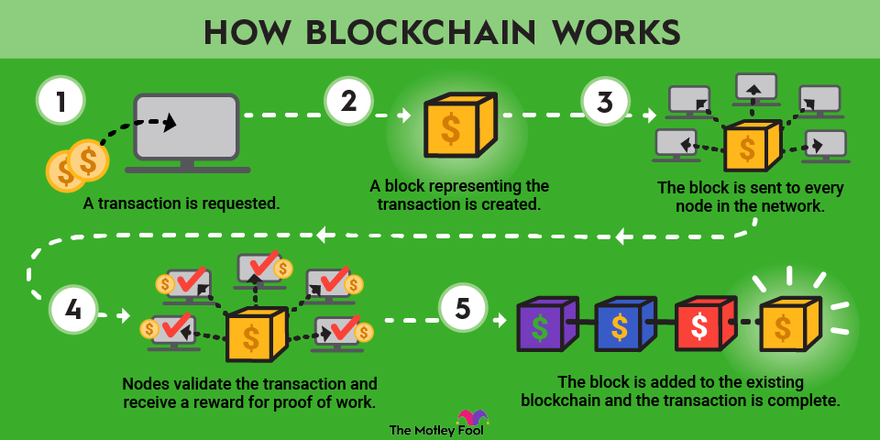

What is Emerging Technologies?
Emerging technologies are technologies whose development, practical applications, or both are still largely unrealized. These technologies are generally new but also include older technologies finding new applications. Emerging technologies are often perceived as capable of changing the status quo.
NANOTECHNOLOGY
Nanotechnology is science, engineering, and technology conducted at the nanoscale, which is about 1 to 100 nanometers. Nanoscience and nanotechnology are the study and application of extremely small things and can be used across all the other science fields, such as chemistry, biology, physics, materials science, and engineering.
HISTORY OF NANOTECHNOLOGY
| The ideas and concepts behind nanoscience and nanotechnology started with a talk entitled “There’s plenty of room at the bottom” by physicist Richard Feynman at an American Physical Society meeting at the California Institute of Technology (CalTech) on December 29, 1959, long before the term nanotechnology was used. In his talk, Feynman (see Figure 7.1) described a process in which scientists would be able to manipulate and control individual atoms and molecules. Over a decade later, in his explorations of ultraprecision machining, Professor Norio Taniguchi coined the term nanotechnology. It wasn't until 1981, with the development of the scanning tunneling microscope that could "see" individual atoms, that modern nanotechnology began. . |
Applications of nanotechnology
➢Medicine: customized nanoparticles the size of molecules that can deliver drugs directly to diseased cells in your body. When it's perfected, this method should greatly reduce the damage treatment such as chemotherapy does to a patient's healthy cells.
➢Electronics: it has some answers for how we might increase the capabilities of electronics devices while we reduce their weight and power consumption.
➢Food: it has an impact on several aspects of food science, from how food is grown to how it is packaged. Companies are developing nanomaterials that will make a difference not only in the taste of food but also in food safety and the health benefits that food delivery.
➢Agriculture: Nanotechnology can possibly change the whole agriculture part and nourishment industry anchor from generation to preservation, handling, bundling, transportation, and even waste treatment.
➢Vehicle manufacturers: Much like aviation, lighter and stronger materials will be valuable for making vehicles that are both quicker and more secure. Burning motors will likewise profit from parts that are all the more hardwearing and higher temperature safe.
BIOTECHNOLOGY
Biotechnology is technology based on biology - biotechnology harnesses cellular and biomolecular processes to develop technologies and products that help improve our lives and the health of our planet. We have used the biological processes of microorganisms for more than 6,000 years to make useful food products, such as bread and cheese, and to preserve dairy products. Today, biotechnology covers many different disciplines (e.g. genetics, biochemistry, molecular biology, etc.). New technologies and products are developed every year within the areas of e.g. Medicine (development of new medicines and therapies), agriculture (development of genetically modified plants, biofuels, biological treatment) or industrial biotechnology (production of chemicals, paper, textiles, and food).
Watch this video to understand more about biotechnology.
HISTORY OF BIOTECHNOLOGY
- When Edward Jenner invented vaccines and when Alexander Fleming discovered antibiotics, they were harnessing the power of biotechnology. And, of course, modern civilization would hardly be imaginable without the fermentation processes that gave us beer, wine, and cheese.
- When he coined the term in 1999. Agriculturalist Karl Ereky described ‘biotechnology’ as “all lines of work by which products are produced from raw materials with the aid of living things.”
Applications of biotechnology
➢Agriculture (Green Biotechnology): is used in waste treatment and pollution prevention. Environmental biotechnology can more efficiently clean up many wastes than conventional methods and greatly reduce our dependence on methods for land-based disposal.
➢ Aquaculture Fisheries: It helps in improving the quality and quantity of fishes. Through biotechnology, fishes are induced to breed via gonadotropin-releasing hormone.
➢Medicine (Medicinal Biotechnology): This helps in the formation of genetically modified insulin known as humulin. This helps in the treatment of a large number of diabetes patients. It has also given rise to a technique known as gene therapy. Gene therapy is a technique to remove the genetic defect in an embryo or child. This technique involves the transfer of a normal gene that works over the non-functional gene.
➢Environment (Environmental biotechnology): is used in waste treatment and pollution prevention. Environmental biotechnology can more efficiently clean up many wastes than conventional methods and greatly reduce our dependence on methods for land-based disposal.
BLOCKCHAIN TECHNOLOGY
Originally blockchain is a growing list of records, called blocks, that are linked using cryptography. Each block contains a cryptography hash of the previous block, a timestamp, and transaction data (generally represented as a Merkle tree). A blockchain is, in the simplest of terms, a time-stamped series of immutable records of data that is managed by a cluster of computers not owned by any single entity. Each of these blocks of data (i.e. block) is secured and bound to each other using cryptographic principles (i.e. chain).
HISTORY OF BLOCKCHAIN TECHNOLOGY
- The first work on a cryptographically secured chain of blocks was described in 1991 by Stuart Haber and W. Scott Stornetta. They wanted to implement a system where document timestamps could not be tampered with.
- In 1992, Bayer, Haber, and Stornetta incorporated Merkle trees to the design, which improved its efficiency by allowing several document certificates to be collected into one block.
- The first blockchain was conceptualized by a person (or group of people) known as Satoshi Nakamoto in 2008. Nakamoto improved the design in an important way using the Hash cash like the method to add blocks to the chain without requiring them to be signed by a trusted party.
- In August 2014, the bitcoin blockchain file size, containing records of all transactions that have occurred on the network, reached 20 GB (Gigabyte). In January 2015, the size had grown to almost 30 GB, and from January 2016 to January 2017, the bitcoin blockchain grew from 50 GB to 100 GB in size.
- The words block and chain were used separately in Satoshi Nakamoto's original paper but were eventually popularized as a single word, blockchain, by 2016.
The Three Pillars of Blockchain Technology
- Decentralization
- In a decentralized system the information is not stored by one single entity. In fact, everyone in the network owns the information.
- In a decentralized network ,if you wanted to interact with your friend then you can do so directly without going through a third party. That was the main ideology behind Bitcoins. You and only you alone are in charge of your money. You can send your money to anyone you want without having to go through a bank.
- Transparency
- One of the most interesting and misunderstood concepts in blockchain technology is “transparency.” Some people say that blockchain gives you privacy while some say that it is transparent. Why do you think that happens?
- A person’s identity is hidden via complex cryptography and represented only by their public address. So, if you were to look up a person’s transaction history, you will not see “Bob sent 1 BTC” instead you will see “1MF1bhsFLkBzzz9vpFYEmvwT2TbyCt7NZJ sent 1 BTC”.
- So, while the person’s real identity is secure, you will still see all the transactions that were done by their public address. This level of transparency has never existed before within a financial system. It adds that extra, and much needed, level of accountability which is required by some of these biggest institutions.
- Immutability
- Immutability, in the context of the blockchain, means that once something has been entered into the blockchain, it cannot be tampered with.
- The reason why the blockchain gets this property is that of the cryptographic hash function.
- In simple terms, hashing means taking an input string of any length and giving out an output of a fixed length.